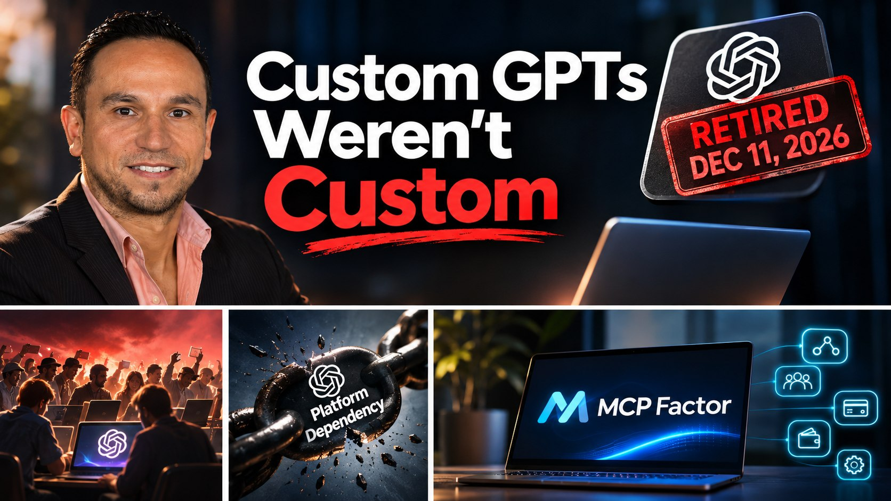
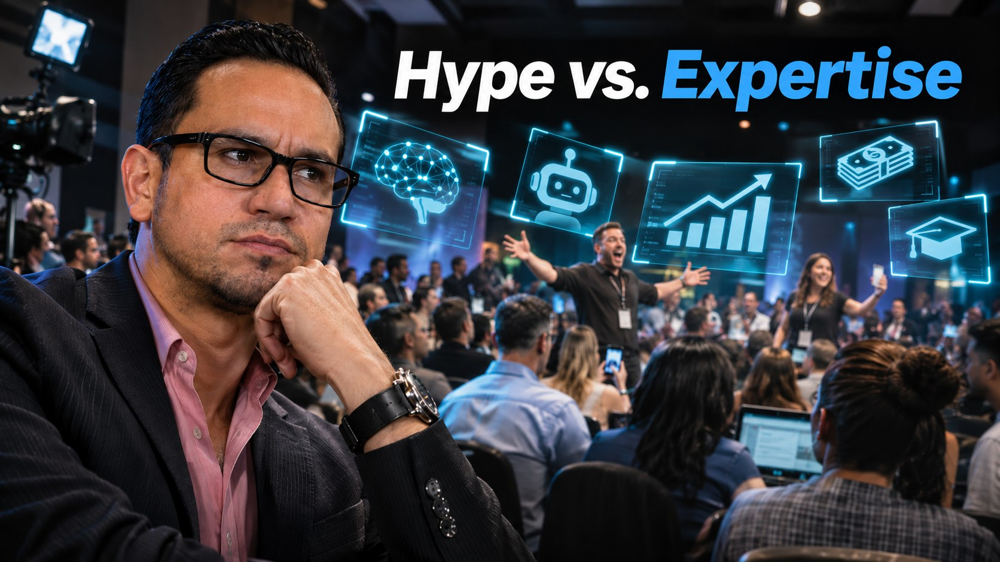

On November 10, 2025, I had an interesting conversation with ChatGPT. I challenged the validity of what OpenAI was calling "Custom GPTs" and, more specifically, their commercial viability as business solutions.
My argument was simple.
How can you market something as a custom Ai solution when you don't control its deployment, distribution, infrastructure, or the platform your customers must use to access it?
Sure, you could upload documents, write detailed instructions, give your GPT a catchy name and publish it.
But did that make it a custom GPT?
No.
I didn't think so then. I don’t think so now.
They never were!
Fast-forward almost exactly one year.
OpenAI has officially announced that Custom GPTs are being retired, with December 11, 2026, as the official retirement date.
The Ai Gold Rush and the Overnight Educators

Remember when practically everybody became an Ai expert overnight?
Social media groups were flooded with tutorials on building Custom GPTs. Suddenly, uploading a PDF and writing a system prompt qualified someone to teach a “masterclasses” on Ai development.
AI agencies appeared everywhere. Courses were launched. Certifications were promoted. Self-proclaimed educators who had discovered prompt engineering the previous Tuesday were teaching business owners how to build their Ai empires by Friday.
Some were genuinely talented people exploring a promising technology.
Others were selling an illusion they didn't fully understand themselves and businesses were buying into it.
The irony is that many of these newly minted educators were teaching business owners how to build something they didn't actually own.
And hardly anybody questioned it.
There's a substantial difference between configuring someone else's technology and architecting a custom business solution.
That distinction seemed to get lost somewhere between the hype and the next $997 masterclass.
What Exactly Were You Building?
When I evaluate an Ai implementation, I'm interested in what happens beyond the conversation.
Can it be deployed on the client's website?
Could a business independently deploy that assistant on social media chat?
Could it control the customer experience without forcing users into another company's ecosystem?
Could it capture customer information, build audiences, initiate follow-up campaigns, integrate with existing business processes, and measure commercial outcomes?
More importantly, what happened to the business's investment if OpenAI decided to change the rules?
What happens when the platform changes the rules?
Well, now we know.
The Difference Is in the Architecture
This is something I've learned over eight years building business automations.
The Ai model is only one component of a solution.
The architecture is what connects it to the business, its customers, its data, and the processes that actually generate value.
Take customer retention, for example.
A Custom GPT could explain how a loyalty program works.
An agentic system built with technology like MCP Factor can be configured to identify customers, interact with CRM records, trigger automations, manage loyalty-related workflows, and integrate with Apple Wallet or Android wallet passes.
One provides information.
The other can actually participate in operating the business.
And that's a significant difference.
What matters is understanding the dependencies, controlling the business processes and customer relationships, and designing solutions with integration and portability requirements in mind.
True customization isn't about owning the language model. It's about controlling what you've built around it.
The Writing Was on the Wall
I didn't predict the exact date OpenAI would retire Custom GPTs.
Nor did I know what would replace them.
But the architectural limitations were obvious enough for me to question the business model nearly a year before the announcement.
And that's really my point.
Businesses shouldn't be making long-term technology investments based on whatever feature happens to be trending on LinkedIn this week.
They should be investing in solutions that address real business objectives, with a clear understanding of what they control, what they depend on, and what happens when those dependencies change.
That's the thinking behind my work with MCP Factor.
Not another chatbot for the sake of having a chatbot.
Custom Ai architecture designed around operational needs, integration, automation, and measurable business outcomes.
Because here's something worth considering before investing in your next revolutionary Ai solution:
If your entire competitive advantage depends on a feature someone else can discontinue tomorrow, you don't have a moat.
You have a countdown.
Danny Monzon | Ai Systems Architect & Automation Specialist